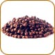
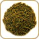
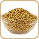

| Product | Details | Price |
|---|---|---|
| Cinnamon | Cinnamon is one of the most popular of our spices, due to its sweet flavor and prominent role in baked goods and candies. Cinnamon is also wonderful in stews and sauces. | $10.75 |
| Nutmeg | Nutmeg comes from the seed of a tropical tree. It has a sweet, rich, and aromatic flavor that complements meats, vegetables, tomato sauces, and baked goods. | $3.95 |
| Bayleaf | This versatile herb goes extremely well with soups, stews, roasts, and anything that is simmered or cooked slowly. | $5.75 |
| Cloves | Cloves are dried flower buds of an evergreen tree in the myrtle family, found natively in Madagascar, Brazil, Panang, and Ceylon. The use of cloves in cuisine and even medicine dates back to ancient times. Cloves are strong in flavor and aroma and are commonly used in cookies and cakes. | $8.75 |
| Cumin | Cumin is common to Indian and Middle Eastern cuisine. With its strong flavor and pungency, it's a prominent ingredient in curries. | $5.00 |
| Star Anise | Star anise has a powerful, licorice-like flavor. It is native to many Eastern countries including China, Vietnam, and Japan. | $4.75 |
| Pepper | A popular flavoring for sauces, meats, and marinades, pepper is one of the most common spices used in cuisines across the globe. | $6.75 |
| Coriander | A popular flavoring for sauces, meats, and marinades, pepper is one of the most common spices used in cuisines across the globe. | $3.75 |